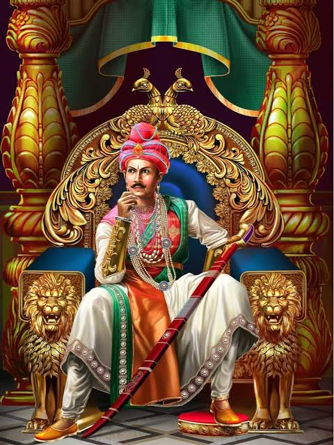

About Ashoka the Great
Ashoka the Great (304–232 BCE) was an Indian emperor of the Maurya Dynasty who ruled almost all of the Indian subcontinent from circa 268 to 232 BCE. He is remembered for his conversion to Buddhism and his efforts to spread the teachings of the Buddha throughout his empire and beyond.
Legacy
Ashoka's reign is considered one of the most significant periods in Indian history. He is credited with the construction of numerous stupas, pillars, and edicts that promoted Buddhist teachings and moral values. His edicts, inscribed on rocks and pillars, are among the earliest examples of written records in India.
Ashoka's commitment to non-violence and his efforts to promote social welfare and justice have left a lasting impact on Indian culture and history.